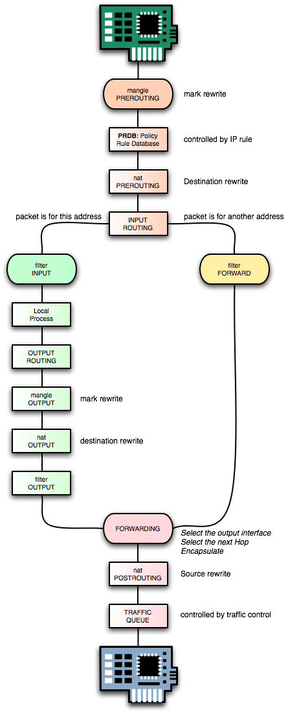
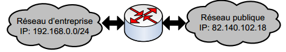

IPTABLES

Types of tables: FILTER, NAT, MANGLE.
Types of chains: - INPUT: to control packets entering the interface. This chain applies for all packets destine to firewall.
- OUTPUT: to control packets leaving the interface. This chain applies for all packets originating from firewall.
- FOWARD: to control packets being masqueraded or sent to remote hosts. This chain applies for all packets passing through firewall.
iptables –t TABLE –A CHAIN –[i|o] IFACE –s w.x.y.z –d a.b.c.d –p PROT –m state --state STATE –j ACTION- TABLE = nat | filter | mangle
- CHAIN = INPUT | OUTPUT | FORWARD | PREROUTING | POSTROUTING
- IFACE = eth0 | eth1 | ppp0 | ...
- PROT = tcp | icmp | udp | …
- STATE = NEW | ESTABLISHED | RELATED | …
- ACTION = DROP | ACCEPT | REJECT | DNAT | SNAT | …
iptable options- -p protocol type (tcp, udp, icmp)
- -s source IP address & port number
- -d dest IP address & port number
- -i interface name (lo, ppp0, eth0)
- -j target (ACCEPT, DROP, REJECT)
- -l log this packet
- --sport source port
- --dport dest port
- --icmp-type
Operations to manage whole chains- N: create a new chain
- P: change the policy of built-in chain
- L: list the rules in a chain
- F: flush the rules out of a chain
Manipulate rules inside a chain- A: append a new rule to a chain
- I: insert a new rule at some position in a chain
- R: Replace a rule at some position in a chain
- D: delete a rule in a chain
Action Targets/Jumps: ACCEPT, REJECT, DROP, MASQUERAD, RETURN,
Examples:
- Iptables –A input –s 192.168.100.0/24 –p tcp –j ACCEPT (A: Append)
Permit SSH& deny TELNET
- Iptables –A INPUT –p tcp --dport 22 –j ACCEPT
- Iptables –A INPUT –p tcp --dport telnet –j DROP
Delete rule (D: Delete)
- Iptables –D INPUT 2 ou
- Iptables –D INPUT -p tcp--dport telnet –j DROP
Erase the whole content of the table:
iptables -F
Listing :
- iptables -L -t FILTER
- iptables -L -t MANGLE
- iptables -L -t nat
Protocol based filter:
- iptables -A INPUT -p udp --dport 514 -j ACCEPT
Create new chain:
- iptables -N nom (ex: iptables -N INTRANET)
Rename a chain:
- iptables -E old_name new_name
Redirection to a user created chain:
- iptables -A INPUT -s 10.10.10.0/24 -j INTRANET
ICMP:
- iptables -A OUTPUT -p icmp --icmp-type echo-reply -j DROP
- iptables -p icmp --help : for more details about icmp
Many ports :
- iptables -A INPUT -p tcp -m multiport --dport 23,80 -j DROP
@ MAC:
- iptables -A INPUT -p tcp -m mac --mac-source 00:bb:aa:cc:ed:08 -j DROP
@ MAC:
- iptables -A INPUT -p tcp -m mac --mac-destination 00:bb:aa:cc:ed:08 -j DROP
Default policy
- iptables –P INPUT DROP
- iptables –P OUTPUT ACCEPT
ICMP rate limiting (echo-request ou ping): 1 by seconde
- iptables -A INPUT -p icmp -icmp-type echo-request -m limit --limit 1/s -i eth0 -j ACCEPT
To protect against « SYNflooding», limit the SYN request to 5 packet per second
- iptables -A INPUT -p tcp -syn -m limit --limit 5/s -j ACCEPT
Filtering
ICMP rate limiting (echo-request ou ping): 1 by seconde
- iptables -A INPUT -p icmp -icmp-type echo-request -m limit --limit 1/s -i eth0 -j ACCEPT
To protect against « SYNflooding», limit the SYN request to 5 packet per second
- iptables -A INPUT -p tcp -syn -m limit --limit 5/s -j ACCEPT
User chain
Create new user chain:
Redirect the TCP traffic to your newly created chain
- iptables –A INPUT –p tcp –j tcppaquets
Statefull firewall
4 possible states for connection :- 1. NEW: new request for connection
- 2. ESTABLISHED: connection is already established
- 3. RELATED: connection is related to another connection
- 4. INVALID: received packets do not belong to any existing connection
Authorize the input packets for established connection
- iptables -A INPUT -m state --state ESTABLISHED,RELATED -j ACCEPT
- Iptables -A INPUT -p tcp -j REJECT
- iptables -A OUTPOUT -p tcp --d port 22 -m state –-state NEW,ESTABLISHED,RELATED -j ACCEPT
Log files
Exemple:
- iptables-A OUTPUT-j LOG (nano /etc/syslog.conf)
- iptables-A INPUT-j LOG
- iptables-A FORWARD-j LOG
Log rejected packets inside /var/log/messages- iptables -N LOG_DROP
- iptables -A LOG_DROP -p tcp --d port 22 -j LOG --log-prefix "ssh access attempt"
- iptables -A LOG_DROP -p tcp --d port 22 -j DROP
- iptables –I INPUT 1 –j LOG_DROP
Backup your configuration
- iptables-save > file.txt
- iptables–F
- iptables–L
- iptables-restore < file.txt
- iptables–L
SNAT

IP source address and port modifcation
- iptables -t nat -A POSTROUTING -j SNAT--to 1.2.3.4
Changing source IP@ from 1.2.3.4=>1.2.3.8
- iptables -t nat -A POSTROUTING -j SNAT --to 1.2.3.4-1.2.3.8
Changing source IP@ to 1.2.3.4 port 1-1023
- iptables -t nat -A POSTROUTING -j SNAT --to 1.2.3.4:1-1023
DNAT

Modification of destination IP address to 1.2.3.4
- iptables - tnat -A PREROUTING –j DNAT --to 1.2.3.4
Load balancing of servers
- iptables -t nat -A PREROUTING -i eth1 -j DNAT --to-destination 10.0.1.2-10.0.1.4
Modification of destination IPaddress from1.2.3.4=>1.2.3.8
- iptables -t nat -A PREROUTING –j DNAT --to 1.2.3.4-1.2.3.8
Port redirection and destination IPaddress modification tp:1.2.3.4 port 8080
- iptables -t nat -A PREROUTING –p tcp --dport 80 -j DNAT --to 1.2.3.4:8080
MASQUERADING

Masquerading: changing source IP address to the address of your firewall (iptables).
Association between private @IPs 192.168.0.0/24 and the IP address of interface eth1
- iptables -t nat -A POSTROUTING -o eth1 -s 192.168.0.0/24 –j MASQUERADE
Port Redirection

Port redirection: from 80 to 8080
- iptables -t nat -A PREROUTING -p tcp -d 80.15.82.16 --dport 80 -j DNAT --to 192.168.0.101:8080
Just only the port 2323 to port 23:
- iptables -t nat -A PREROUTING -p tcp --dport 2323 -j REDIRECT --to-ports 23
- iptables -t nat -A PREROUTING -p tcp --dport 80 -j REDIRECT --to-port 8080
ROUTING
Routingfrom one interface to another:
- iptables -t nat -A POSTROUTING -o eth0 -j MASQUERADE
Turn Linux into router: (your Linux computer become a router)- 1. echo1 > /proc/sys/net/ipv4/ip_forward
- 2. route add –net 10.0.0.0/24 netmask 255.255.255.0 gw 192.168.1.20 &&
- route –nr
- 3. nano /etc/sysctl.conf et modifier la valeur du net.ipv4.ip_forward de 0 à 1
- network-manager: /etc/init.d/network-manager stop
Ubuntu:
END